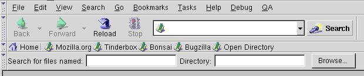

Cross Package Overlays
This section describes how to apply overlays to files that don't import them.
Applying Overlays to other Packages
Overlays have another very useful feature. In the examples in the previous section, the overlays were imported by the window. You can also go the other way and have the overlays specify which windows that they apply to. You specify this by modifying the contents.rdf file for your package. This is useful because the overlay can modify the user interface of another package without changing the other package. For example, you could add menu items or toolbars to the Mozilla browser window.
We'll use this feature to add a toolbar to the Mozilla browser window. The Mozilla Mail application uses overlays to add content to the browser window. For example, if Mail is not installed, there will be no New Message command. However, if Mail is installed, an overlay will be applied to the menu to add the New Message command. Below, we'll add a find files toolbar to the browser. It probably wouldn't be useful to have this feature, but we'll do it anyway.
Mozilla allows you to add a list of overlays to the contents.rdf file that you use to list chrome packages, skins and locales. Once you have created an overlay, you can add it to the contents.rdf file. Then add items, one for each window that you want the overlay to apply to.
First, let's create a simple overlay. It will just have a few fields for entering a filename and directory to search. Call the file foverlay.xul and add it to the findfile directory along with findfile.xul.
Example 12.7.1: Source<?xml version="1.0"?>
<overlay
xmlns="http://www.mozilla.org/keymaster/gatekeeper/there.is.only.xul">
<toolbox id="navigator-toolbox">
<toolbar id="findfile_toolbar">
<label control="findfile_filename" value="Search for files named:"/>
<textbox id="findfile_filename"/>
<label control="findfile_dir" value="Directory:"/>
<textbox id="findfile_dir"/>
<button label="Browse..."/>
</toolbar>
</toolbox>
</overlay>You can view this by changing the overlay to a window. The only thing that is special here is the id used on the toolbox. This value (navigator-toolbox) is the same as the identifier of the toolbox in the browser window (navigator.xul). This means that the overlay will apply to the toolbox in the browser window and the content will be added as an extra toolbar.
To add this overlay to the manifest file, we need to add two resources. First, we add one for each window that we are applying an overlay to. The code below should be added into content.rdf just before the closing RDF tag.
<RDF:Seq about="urn:mozilla:overlays"> <RDF:li resource="chrome://navigator/content/navigator.xul"/> </RDF:Seq>
This declares that we are adding a overlay window, a child of the root overlay node (urn:mozilla:overlays). You can add additional nodes for any other windows that you want to apply overlays to by adding additional li nodes.
Next, we add a node for each overlay to apply to the window. In this case, we only have one, but we could apply others also. Add these lines just after the previous lines.
<RDF:Seq about="chrome://navigator/content/navigator.xul"> <RDF:li>chrome://findfile/content/foverlay.xul</RDF:li> </RDF:Seq>
Mozilla reads this information and builds a list of overlays that are applied to other windows. It stores this information in the chrome/overlayinfo directory. You do not need to manually modify the files in this directory. It is automatically generated and modified when Mozilla is first run or when new packages are installed. However, you can force the data to be rebuilt by deleting this directory and the chrome.rdf file.

As a side note, you can use a similar technique to apply extra style sheets. The following example shows how:
<RDF:Seq about="urn:mozilla:stylesheets"> <RDF:li resource="chrome://messenger/content/messenger.xul"/> </RDF:Seq> <RDF:Seq about="chrome://messenger/content/messenger.xul"> <RDF:li>chrome://blueswayedshoes/skin/myskinfile.css</RDF:li> </RDF:Seq>
(Next) Next, we'll see how to create an installer for a XUL application.
Examples: 12.7.1